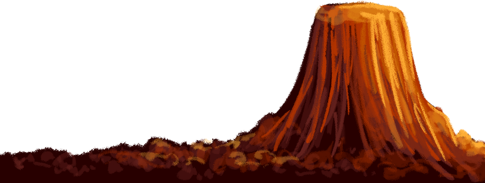
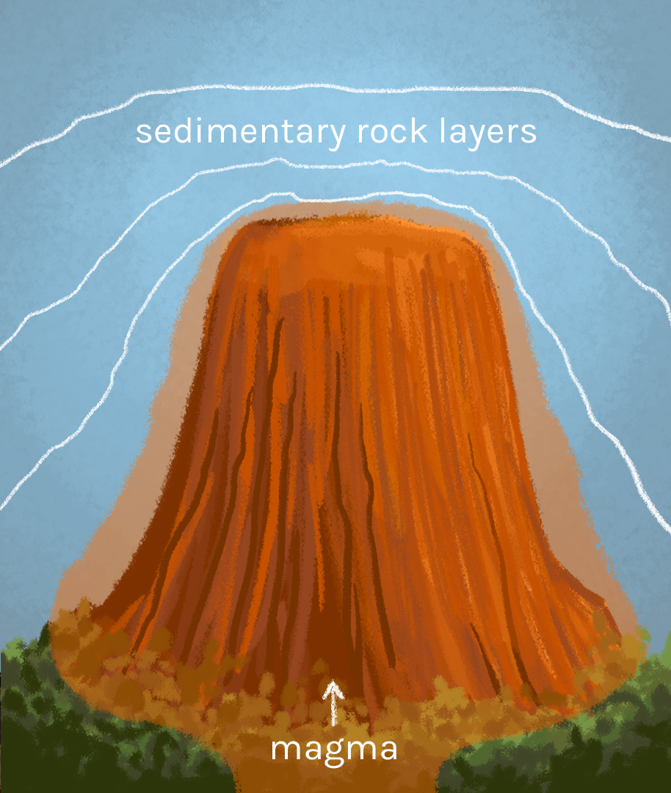
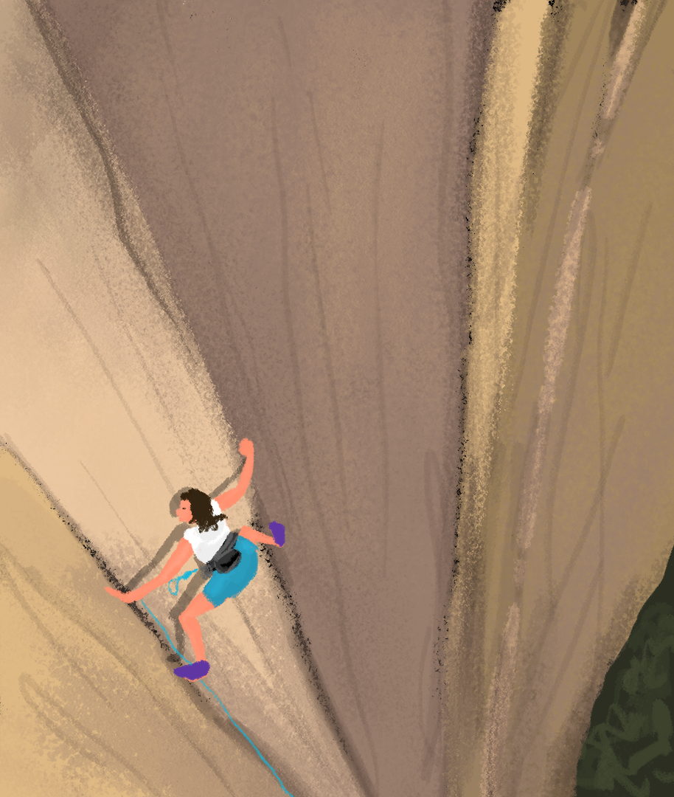

Battle to the Top
An Analysis of Devils Tower and Religious Freedom

The History and Formation of Devils Tower

While the exact formation processes of Devils Tower is unknown, most geologists agree that is was created by magma underneath the Earth’s surface that was pushed up and cooled and then later exposed through the erosion of more exposed sedimentary rock layers.
Devils Tower’s unique column appearance is known as columnar jointing, which occurs only through the contraction and cracking of cooling igneous rocks, forming hexagonal columns.
On September 24, 1906, President Theodore Roosevelt recognized Devils Tower as the nation’s first national monument, setting aside 1,152.91 acres of land. The tower soon became a popular camping and picnicking spot for local residents and also elaborate 4th of July celebrations. The best-known Independence Day celebration was held in 1893, where a local rancher, William Rogers, climbed the tower for the first time using a 350-foot ladder and driving pegs.
Recreation and Residents
Devils Tower, standing 867 feet from its base to the summit, is a popular tourist location for hiking and climbing. The most popular hike is the 1.3 mile Tower Trail, from the Visitor Center to the base of the tower. There is also the Red Beds Trail that features views of the tower and Belle Fourche River valley and the Joyner Ridge Trail that offers different views of the tower from the north boundary of the park. Rock climbing also also become a prominent feature of the park, allowing the climbers to scale the hundreds of parallel cracks, extending nearly 400 feet upwards. The tower is a popular location for crack climbers as the hexagonal columns of the tower create cracks varying in length and width, with some large enough to fit a climber’s entire body and others barely enough for fingers. The most popular routes include the Durrance and Wiessner routes.
The first explorers settled in the western end of the Black Hills, violating the Treaty of 1868, which guaranteed the land to the Native Americans. In 1874, General George A. Custer, further lead an expedition into the hills, discovering gold. As a result, miners flooded the area. The Federal Government attempted to negotiate purchases of the land and brought in an army, but negotiations with the Natives broke down in 1875. Towns, such as Custer City and Deadwood, were popped up quickly and the Native Americans feared they would lose their reservations. By 1876, the government was in a war with the Native Americans. Although the U.S. army lost the violent Battle of the Little Bighorn, by autumn, the Native Americans ceded the Black Hills and their lands in Wyoming to the settlers. In the 1880s, many small-scale farmers and ranchers from the midwest moved into the area.
Today, ranchers and small-scale farmers continue to inhabit the landscape, while the tourism of the tower brings in millions to the local economy.
American Wilderness Philosophy

President Ulysses S. Grant’s establishment of National Parks in America cemented the belief that the wilderness was a source of hunting and recreation. Afterwards, the Organic Act of 1916 created the National Park Service to converse the natural scenery and wildlife and provide for “the enjoyment of future generations”. These two measures encouraged the proliferation of touring and camping and the capitalization on the wilderness for leisure and recreation.
Naturalist and outdoorsman, Aldo Leopold, argued that “camping and woodcraft are not only an idle nostalgia for our frontier past, they are a moral improvement upon it”. Leopold actively encouraged the use of wilderness for recreation, claiming that it was an environmentally better alternative for westward expansion.
Even today, a landscape is valued for its beauty and recreational value, with tourism in National Parks achieving more than 318 million visitors in a year and contributing $40 billion to the US Economy.
The Conflict
The main conflict between the two major sides is the use and significance of the tower. While the local residents and recreational climbers see Devil’s Tower as an astonishing and profitable tourist location, excellent for climbing and sightseeing, the Native Americans value the land for its religious significance.
In the famous Bear Lodge Multiple Use Association v. Babbitt, the plaintiffs were interested in access to the tower for recreational and commercial purposes, particularly rock climbing, and were challenging a voluntary climbing plan that allowed visitors to surrender their climbing rights in June, an important month for Native American religious ceremonies. Although the June climbing ban was completely voluntary, the association claimed that the protection efforts promoted one religion over the rest, which would violate the First Amendment. The court ruled that this partial and temporary restriction on climbing was not in violation of the First Amendment.
These conflicting views are a result of opposing values of landscape. American Wilderness Philosophy establishes land as a source of beauty, leisure, and recreation, which is why the local residents and clibers are insist on keeping the monument open during the month of June. However, Native Americans view the landscape as a living spirit that their worship and cherish, so their religion is based around physical locations.
Additionally, the Sioux Treaty of 1868 recognized the Black Hills, in which Devils Tower is located, as part of the Great Sioux Reservation and set it aside for the exclusive use by the Sioux. This treaty was quickly broken when General George A. Custer led an expedition of miners into the hills following rumors of gold. Battle broke out between the two groups, and eventually led to the government confiscation of the land in 1877, deepening the land conflict.
Works Cited
1. “Bear Lodge v. Babbitt - Opposition.” The United States Department of Justice, 22 Oct. 2014, www.justice.gov/osg/brief/bear-lodge-v-babbitt-opposition.
2. “Devils Tower National Monument (U.S. National Park Service).” National Parks Service, U.S. Department of the Interior, www.nps.gov/deto/index.htm.
3. Dohnalek, James. “Native American Religious Accommodations, National Parks, and the Cutter Test.” University of St. Thomas Law Journal, vol. 15, no. 3, 2019, pp. 715–744.
4. Dussias, Allison M. “Cultural Conflicts Regarding Land Use: The Conflict Between Recreational Users at Devil’s Tower and Native American Ceremonial Users.” Vermont Journal of Environmental Law, vol. 2, 2000, pp. 13–40.
5. Henderson, David. “American Wilderness Philosophy.” Internet Encyclopedia of Philosophy, www.iep.utm.edu/am-wild/.
6. Mattison, Ray H. “First Fifty Years of Devils Tower National Monument.” National Park Service, 1955, www.nps.gov/deto/learn/historyculture/upload/First-50-Years-of-DETO-Ray-Mattison.pdf.
7. McNally, Michael D. “Native American Religious Freedom as a Collective Right.” Brigham Young University
Law Review, 2019.